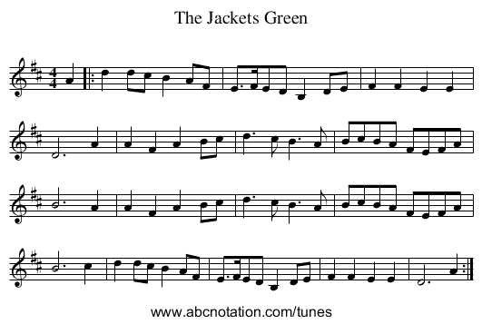
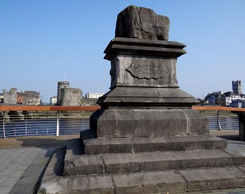

The Jackets Green
Les Gilets Verts
By/par Michael Scanlan (1833 - 1917)

Tune - Mélodie
Source: the "abcnotation.com" site
Sequenced by Christian Souchon
|
To the tune:
Irish, Air and March (2/4 time). G Major (Mulvihill): D Major (Miller & Perron). To the lyrics: An Irish song in which a young woman laments the death of her lover Donal, who fought under Sarsfield, and against the Williamite army. She says that Irish women should love none but those who wear the jackets green [i.e. Irish patriots]. Composed by Michael Scanlan (1834-1900) from Mahoonagh, near Newcastlewest, Limerick. Scanlan emigrated to Ireland while a young man. He also wrote "Bold Fenian men" and "Limerick is beautiful." The Sarsfield mentioned in the song is Patrick Sarsfield (c. 1660–1693) who took part in the Jacobite wars in Ireland against William of Orange. |
A propos de la mélodie
Irlandais, Air et marche (rythme 2/4). sol majeurr (Mulvihill): ré majeur (Miller & Perron). A propos des paroles: Chant irlandais dans lequel une jeune femme déplore la mort de son bienaimé Donal qui combattit dans le régiment de Sarsfield contre l'armée de Guillaume d'Orange. Elle proclame que les Irlandaises n'aimeront aucun homme qui ne porte le "gilet vert" [c.à d. qui ne soit pas un patriote irlandais]. Composé par Michael Scanlan (1834-1900) de Mahoonagh, près de Newcastlewest, Limerick. Scanlan s'établit en Irlande quand il était jeune. On lui doit également les chants "Bold Fenian men" et"Limerick is beautiful." Le Sarsfield dont parle le chant est Patrick Sarsfield (c. 1660–1693) qui participa aux guerres jacobites d'Irlande contre Guillaume d'Orange. |

|
THE JACKETS GREEN
By Michael Scanlan (1833 - 1917) 1. When I was a maiden fair and young, On the pleasant banks of Lee, No bird that in the greenwood sung, Was half so blithe and free. My heart ne'er beat with flying feet, No love sang me his queen, Till down the glen rode Sarsfield's men, And they wore the jackets green. 2. Young Donal sat on his gallant grey Like a king on a royal seat, And my heart leaped out on his regal way To worship at his feet. O Love, had you come in those colours dressed, And wooed with a soldier's mein I'd have laid my head on your throbbing breast For the sake of your jacket green. 3. No hoarded wealth did my love own, Save the good sword that he bore; But I loved him for himself alone And the colour bright he wore. For had he come in England's red To make me England's queen, I'd rove the high green hills instead For the sake of the Irish green. 4. When William stormed with shot and shell At the walls of Garryowen, In the breach of death my Donal fell, And he sleeps near the Treaty Stone. That breach the foeman never crossed While he swung his broadsword keen; But I do not weep my darling lost, For he fell in his jacket green. 5. When Sarsfield sailed away I wept As I heard the wild "ochone". [2] I felt, then dead as the men who slept 'Neath the fields of Garryowen. White Ireland held my Donal blessed, No wild sea rolled between, Till I would fold him to my breast All robed in his Irish green. 6. My soul has sobbed like waves of woe, That sad o'er tombstones break, For I buried my heart in his grave below, For his and for Ireland's sake. And I cry. "Make way for the soldier's bride In your halls of death, sad queen For I long to rest by my true love's side And wrapped in the folds of green." 7. I saw the Shannon's purple tide Roll by the Irish town, As I stood in the breach by Donal's side When England's flag went down. And now it lowers when I seek the skies, Like a blood red curse between. I weep, but 'tis not women's sighs Will raise our Irish green. 8. Oh, Ireland, sad is thy lonely soul, And loud beats the winter sea, But sadder and higher the wild waves roll O'er the hearts that break for thee. Yet grief shall come to our heartless foes, And their thrones in the dust be seen, So, Irish Maids, love none but those Who wear the jackets green. Source: celtic-lyrics.com/lyrics/264.html |
LES GILETS VERTS
par Michael Scanlan (1833 - 1917) 1. J'étais parmi les plus belles filles qui soient Sur les rives de la Lee. Jamais, libre ou joyeux comme moi, Aucun oiseau du ciel on n'entendit. Jamais encore n'avait si fort Un cœur battu, rencontrant l'âme sœur, Lorsque, par la ville, on vit défiler Sarsfield Et ses gars aux gilets verts. 2. Le jeune Donal chevauchait un cheval gris, Majestueux comme un roi: Mon cœur dans ma poitrine a bondi, Quand je l'ai vu. C'en était fait de moi! L'amour est là, il s'est fait soldat! Dis, quelle femme n'eût rendu les armes, Avouant sa défaite, sur ton cœur posé la tête, Pour l'amour du gilet vert? 3. Or mon bel ami n'avait pas un sou vaillant: Hors son sabre, il n'avait rien. Je l'aimais tel qu'il était, pourtant, Pour la couleur qu'il arborait si bien. J'aurais dit non au rouge saxon, M'eût-on offert le trône d'Angleterre. S'il me le demande, j'irai courir la lande, En l'honneur du gilet vert. 4. Quand Guillaume est venu mettre à feu et à sang Garryowen, pauvre cité, Mon Donal est mort en combattant, Il dort près de la Pierre du Traité [1]. Et l'ennemi n'avait pas franchi La brèche tant qu'il lutta vaillamment; Je retiens mes pleurs, car il mourut dans l'honneur, Revêtu du gilet vert. 5. Quand Sarsfield a pris la mer, mes larmes coulaient. J'entendais tous ces "ochon!". [2] Aussi morte que ceux qui dormaient, Enfouis dans la glèbe de Garryowen. O blanche Erin, sur ta poitrine Garde le bien de l'orage et des grains, Jusqu'au jour béni qui nous verra réunis Dans un même linceul vert! 6. Mon âme pleurait, un océan de chagrin Venait battre les tombeaux. Ce cœur enfoui là, c'était le mien, En deuil de l'Irlande et de mon héros. "Place à la fiancée du soldat Dans tes halles funèbres, triste mort! Car je veux ici, reposer près de l'ami Drapé dans l'étendard vert." 7. Je regardais les flots empourprés du canal Baignant la noble cité; J'étais sur la brèche avec Donal Quand le drapeau saxon fut amené. Le ciel rougeoie dès que je te vois, Drapeau saxon, rouge malédiction! Foin du vague à l'âme et mornes soupirs de femmes Ca, hissons le drapeau vert! 8. Oh, Irlande, elle est triste ton âme esseulée, Quand l'hiver la mer rugit, Plus triste et plus haute est la marée Qui submerge nos cœurs endoloris. Mais l'ennemi doit connaître aussi Le désespoir de voir ses trônes choir. Filles d'Irlande, n'aimez, je vous le demande, Que des gars aux gilets verts! Traduction Christian Souchon (c) 2015 |
